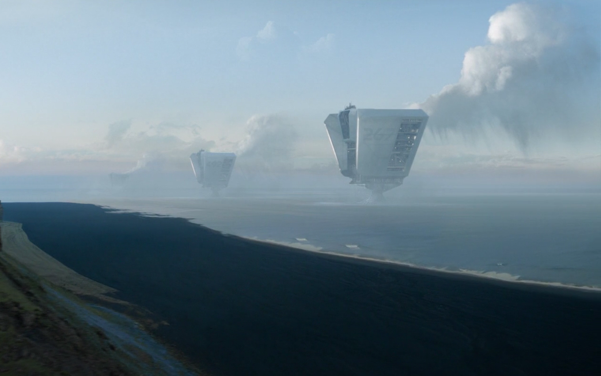
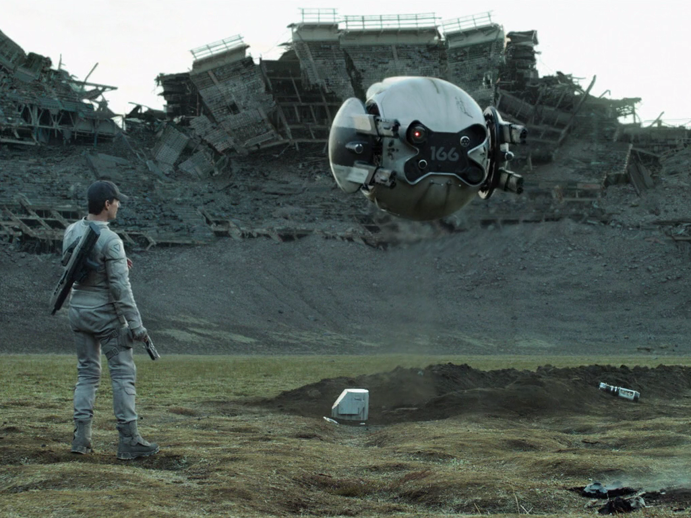
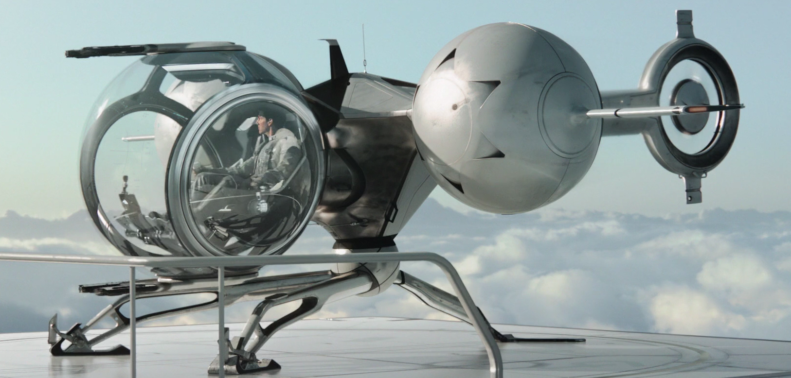
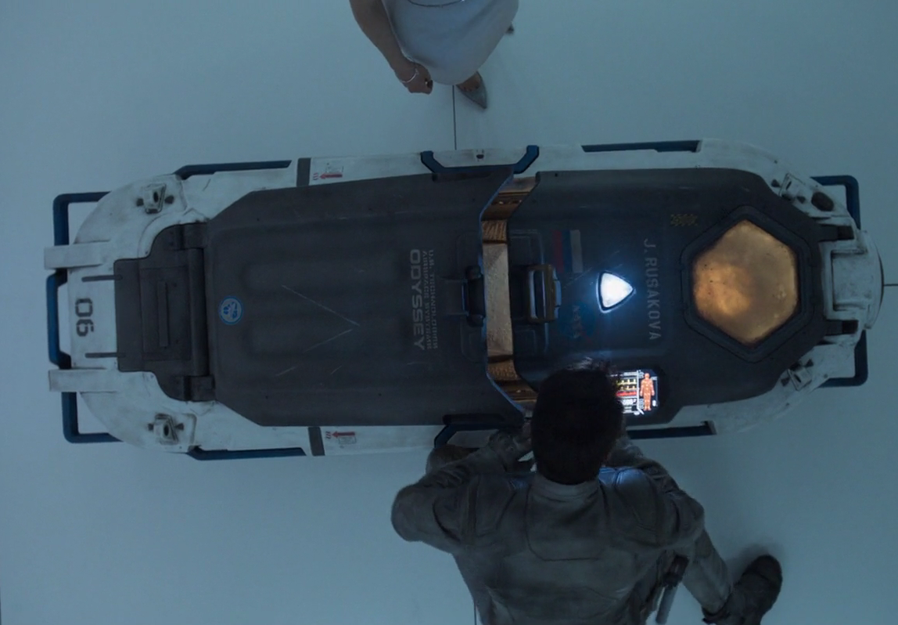
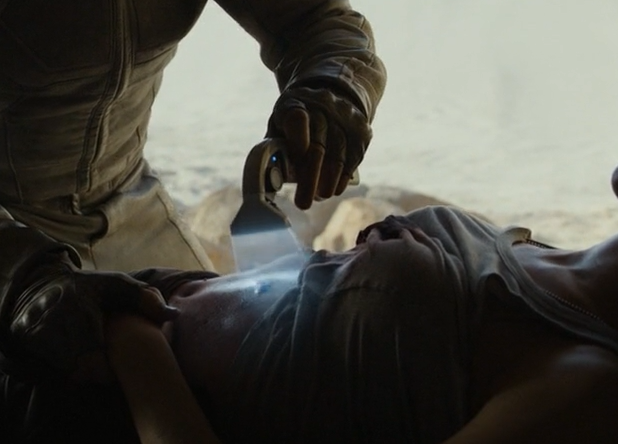

La película se desarrolla en el año 2073. En la Tierra hubo una guerra que ganaron los humanos pero cuyas consecuencias dejaron la mitad del planeta destruido. Jack Harper (Tom Cruise) es un antiguo marine que tiene como misión junto con su compañera Vika extraer los recursos naturales de la zona donde han sido asignados. Jack sobrevuela diariamente los cielos reparando los drones (encargados de vigilar el entrono) que se estropean. Un dia encuentra a una hermosa mujer que cambiará su forma de pensar sobre la tarea que realiza en la Tierra y de si lo que hace es lo correcto.
Necesidades
La película se desarrolla en un futuro cercano, por ello sorprende la tecnología tan avanzada que existe. Toda esta tecnología nace de la necesidad de generar una gran cantidad de energía y de la protección de las hidro plataformas y de los protagonistas para que puedan llevar a cabo su misión.
Dispositivo (Interfaz/tecnología):
Hidro plataformas
Primera Aparición:
02:58
Necesidad:
Succionan el agua marina de la Tierra para poder transformarla en energía de fusión. De esta forma se obtiene una gran cantidad de energía que solventaría los problemas actuales con los combustibles fósiles.

Dispositivo (Interfaz/tecnología):
Drones
Primera Aparición:
08:48
Necesidad:
Drones autónomos equipados con armas a sus laterales. Capaces de escanear el entorno en busca de amenazas y exterminarlas. Su objetivo es proteger las hidro plataformas.
Hoy en día serían de gran interés militar para sustituir a personas en el combate o para proteger instalaciones importantes.

Dispositivo (Interfaz/tecnología):
Bubbleship (Nave burbuja)
Primera Aparición:
04:13
Necesidad:
Bubbleship es una aeronave con una cabina circular transparente que permite una visión de 360º al piloto. Equipada con armas y con motores a reacción. Esta nave puede rotar sobre el eje de sus motores permitiendo una gran maniobrabilidad.
Podrían cubrir necesidades militares e incluso sustituir a los helicópteros convencionales por estar mejor preparadas en todos los aspectos.

Dispositivo (Interfaz/tecnología):
Cápsulas de hibernación
Primera Aparición:
37:43
Necesidad:
Permiten dormir a personas durante años sin consumo de oxígeno y alimentos.
Puede ser la solución a la necesidad de ahorrar recursos cuando en un futuro se realicen viajes a Marte, de esta forma las personas que viajen en ellas no se enterarán del viaje y además estarán mas protegidas de la radiación del espacio.

Dispositivo (Interfaz/tecnología):
Instrumento médico
Primera Aparición:
1:25:18
Necesidad:
Dispositivo que mediante una especia de láser acelera el proceso de curación de una herida permitiendo la recuperación a una velocidad increíble.
Cubriría necesidades médicas de todo tipo permitiendo salvar muchísimas vidas gracias a la rapidez con la que actúa.

Tecnologías involucradas
En 2013, año en que se realizó la película, hay muchas tecnologías que no estaban a nuestro alcance como los drones o las herramientas médicas, sin embargo, otras como las cápsulas de hibernación sí que se disponía de los conocimientos y la tecnología necesaria para poder llevarlas a cabo.
Tecnologías disponibles en el momento de la producción
De las tecnologías que nos muestra la película hay alguna que en la época en la que se estrenó la película podría haberse desarrollado con la tecnología existente en ese momento como la nave burbuja (Bubbleship) o las cápsulas de hibernación.
Tecnologías imaginadas en el momento de la producción
El resto de tecnologías que aparecen en la película son pura invención que aun el ser humano no puede desarrollar, como es el caso de las hidro plataformas, los drones y las herramientas médicas que usan.
Impacto
De momento la única tecnología que está teniendo un impacto importante es la de las cápsulas de hibernación. A parte de haber salido en muchas mas películas hoy en día existen empresas desarrollándolas para futuros viajes a Marte con personas que se tienen planeados.